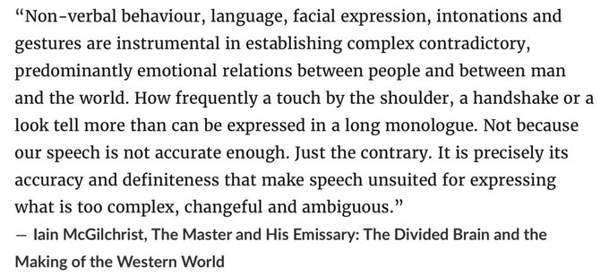

Week 12: Emotions and Thoughts
SCRUM Week 12
📘 Summary: SCRUM Week 12 - Emotions and Thoughts
This week’s SCRUM explores the intricate realms of emotions and thoughts, shedding light on their impact on human cognition and decision-making.
The discussion begins with an overview of contemporary theories on emotions, emphasizing the role of the amygdala in processing sensory information.
Notably, psychiatrist and neuroscientist Ian McGilchrist’s work on the divided brain introduces a holistic perspective on emotions, highlighting their multidimensional nature in the context of brain hemispheric specialization.
The exploration delves into moral emotions, drawing on Jonathan Haidt’s metaphor of the rider and the elephant to elucidate the interplay between conscious reasoning and subconscious mental processes.
Emotions are likened to an internal GPS, guiding decision-making by signaling alignment with goals and providing swift appraisals of experiences.
On the realm of thoughts, the mental state of cognition is described as a dynamic interplay of thought formation, perception, and comprehension, influencing our understanding of the world.
Philosopher and cognitive scientist Daniel Dennett’s contributions to understanding consciousness are outlined, emphasizing his materialist perspective that views consciousness as a product of physical processes in the brain.
Byron Katie’s “The Work” is presented as a transformative approach to managing thoughts, advocating for questioning beliefs rather than blindly accepting them. The emphasis is on understanding thoughts’ transient nature, empowering individuals to choose constructive thought patterns for enhanced mental clarity and resilience.
Keywords: SCRUM Week 12 - Emotions and Thoughts
Emotions and Thoughts, Amygdala, Ian McGilchrist, Moral Emotions, Jonathan Haidt, Internal GPS, Decision-Making, Cognition, Daniel Dennett, Consciousness, Byron Katie, The Work.
1 Emotions
{kind=link}
Contemporary theories of emotion converge around the key role of the amygdala as the central subcortical emotional brain structure that constantly evaluates and integrates a variety of sensory information from the surroundings and assigns them appropriate values of emotional dimensions, such as valence, intensity, and approachability.
1.2 Haidt’s The rider and the Elephant
{kind=link}
- The Righteous Mind: Why Good People Are Divided by Politics and Religion by Jonathan Haidt.
The central metaphor of these four chapters is that the mind is divided, like a rider on an elephant, and the rider’s job is to serve the elephant.
- The rider is our conscious reasoning—the stream of words and images of which we are fully aware.
- The elephant is the other 99 percent of mental processes—the ones that occur outside of awareness but that actually govern most of our behavior.
Jonathan Haidt developed this metaphor in his last book, The Happiness Hypothesis, where he described how the rider and elephant work together, sometimes poorly, as we stumble through life in search of meaning and connection.
In this book he uses the metaphor to solve puzzles such as why it seems like everyone (else) is a hypocrite and why political partisans are so willing to believe outrageous lies and conspiracy theories. He also use the metaphor to show you how you can better persuade people who seem unresponsive to reason.
1.2.1 Moral emotions
A moral emotion is a type of emotion that is closely tied to one’s sense of right and wrong, ethical principles, and moral values.
These emotions arise in response to situations that involve moral or ethical considerations. Unlike basic emotions such as joy, anger, or fear, moral emotions are complex and often involve a higher level of cognitive processing.
Examples of moral emotions include:
- Guilt: A feeling of remorse or regret when one believes they have violated a moral standard.
- Shame: A sense of humiliation or embarrassment related to one’s perceived moral failures.
- Moral Disgust: A reaction to behaviors or situations that violate one’s moral values, often expressed as a feeling of revulsion.
- Compassion: A sympathetic response to the suffering of others, linked to a desire to alleviate that suffering.
- Moral Elevation: A positive emotion experienced when witnessing virtuous or morally uplifting behavior.
These emotions play a crucial role in guiding ethical behavior, promoting cooperation, and maintaining social harmony. While they are emotions, they involve a significant cognitive component, as individuals evaluate their actions and the actions of others in the context of moral norms and principles.
1.3 Emotions as GPS or red/green flag
{kind=link}
Emotions act as an internal GPS, signaling us through feelings and thoughts to guide decision-making and behavior.
When triggered, emotions swiftly inform us about a situation’s alignment with our goals.
For instance, anxiety during a negotiation signals a need for further evaluation. While emotions lack precision, their speed provides a quick appraisal of experiences. Suppressing emotions may seem tempting, but evolved over millennia, they serve a purpose — alerting us to potential red flags.
In business and personal relationships, emotions play a pivotal role, influencing reactions to situations like dealing with narcissistic personalities. Understanding our emotional responses equips us to navigate complex dynamics, contributing to better decision-making and successful outcomes. Embracing emotions as valuable cues enhances emotional intelligence and empowers us to leverage this innate information system for optimal results in various aspects of life.
Emotions are not particularly sophisticated or precise, but their speed and utility make up for what they lack in sophistication and precision. Emotions, when they are not disordered, provide information about your circumstances in a simple, quick way that does not involve a lot of cognition (thinking about it).
2 Thoughts
The mental state of cognition is a complex and dynamic aspect of human experience, encompassing the processes of thought formation, perception, and comprehension.
It involves the interplay of various cognitive functions, such as memory, attention, and problem-solving, shaping our understanding of the world.
The mind constantly generates thoughts, which can range from fleeting and inconsequential to profound and impactful.
Managing this cognitive flux is essential for maintaining mental well-being.
It requires awareness and discernment to navigate the constant stream of thoughts, distinguishing between constructive and destructive patterns.
2.1 Daniel Dennett’s Consciousness
Daniel Dennett, a prominent philosopher and cognitive scientist, has dedicated much of his career to exploring the nature of consciousness. Dennett is known for his influential work in the philosophy of mind, particularly his efforts to demystify consciousness and understand it within the framework of naturalistic philosophy.
Consciousness Explained is a a full-scale exploration of human consciousness. In this landmark book, Daniel Dennett refutes the traditional, commonsense theory of consciousness and presents a new model, based on a wealth of information from the fields of neuroscience, psychology, and artificial intelligence.
{kind=link}
He argues against dualism, the idea that the mind and body are fundamentally distinct, advocating for a materialist perspective that sees consciousness as a product of physical processes in the brain.
In his book “Consciousness Explained,” Dennett delves into the intricacies of subjective experience and challenges traditional notions surrounding the mind.
He proposes that consciousness is not a singular entity but a series of mental processes, or what he terms “multiple drafts” that contribute to our overall sense of awareness.
Dennett’s contributions extend beyond philosophy, as he engages with scientific findings and collaborates with researchers in fields such as neuroscience. His interdisciplinary approach seeks to unravel the mysteries of consciousness through a synthesis of philosophy, cognitive science, and empirical inquiry, offering a valuable perspective in the ongoing discourse on the mind-body relationship.
2.2 Byron Katie’s “The Work”
{kind=link}
Byron Katie’s “The Work” provides a transformative approach to understanding and managing thoughts.
Rooted in self-inquiry, it encourages individuals to question their beliefs and thoughts rather than blindly accepting them.
Katie asserts that thoughts come and go, and it is not necessary to be enslaved by them.
Instead of unquestioningly following thoughts, she advocates for a deeper understanding of their origins and impact.
By investigating the validity of our beliefs, we gain the power to choose more constructive thought patterns, leading to greater mental clarity and emotional resilience. “The Work” offers a practical framework for cultivating mindfulness and fostering a healthier relationship with our thoughts.
3 References
- Myths and Ideas About the Two Halves of Our Brain
- Daniel Dennett twitter
- Instructions for Doing The Work
- Universal Beliefs
- The work
- dukkha
- Three poisons
- Can we create mental energy?
1.1 Social bonding and complex information

Ian McGilchrist, a psychiatrist and neuroscientist, is renowned for his work on the divided brain. In “The Master and His Emissary,” he explores how the left and right hemispheres process information differently, impacting our perception of the world.
McGilchrist underscores the holistic and embodied nature of emotions, viewing them as complex phenomena arising from the integration of cognitive, sensory, and bodily processes. His perspective invites a comprehensive understanding of emotions, emphasizing their multidimensional nature in the context of brain hemispheric specialization.
Ian McGilchrist’s exploration extends to the social dimension of emotions, emphasizing their role in connecting people amidst ambiguous and contradictory information that simple words or data alone cannot fully express.
Emotions, in his view, serve as a crucial bridge in interpersonal communication, allowing individuals to navigate complex social scenarios where the nuances of emotion convey meaning beyond the limitations of explicit language or straightforward data.
This social aspect of emotions highlights their significance in fostering understanding, empathy, and shared experiences within the intricacies of human relationships and societal dynamics.